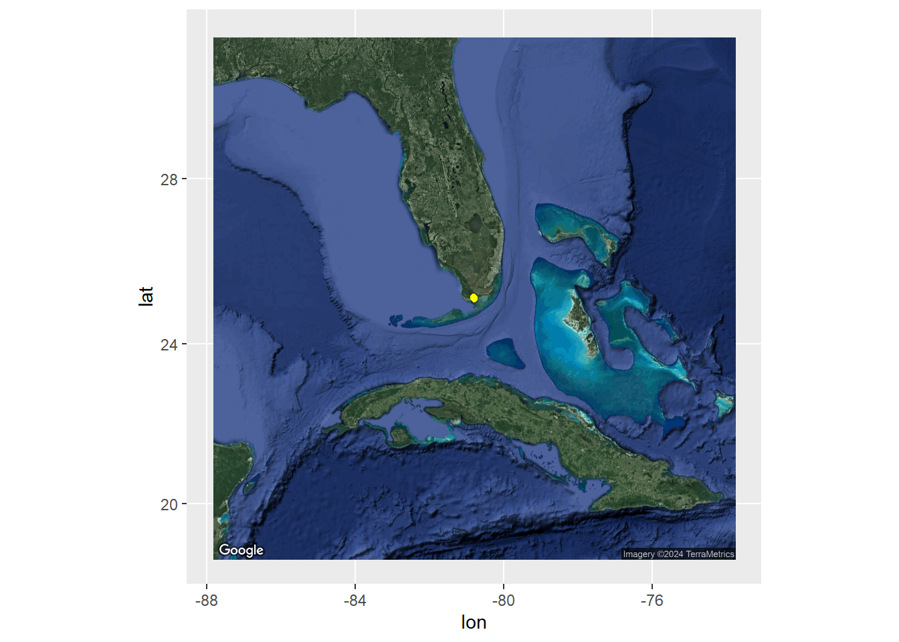

# load libraries
library(terra, exclude = 'resample') #work with spatial data - rasters
## terra 1.7.71
library(raster) #work with spatial data - rasters
## Loading required package: sp
library(sf) #Work with spatial data - shapefiles
## Linking to GEOS 3.12.1, GDAL 3.8.4, PROJ 9.3.1; sf_use_s2() is TRUE
library(sfheaders) #work with spatial data
library(chron) #visualization of acoustic data
##
## Attaching package: 'chron'
## The following objects are masked from 'package:raster':
##
## origin, origin<-
## The following objects are masked from 'package:terra':
##
## origin, origin<-
library(splitstackshape) #break up data into smaller columns
library(scales)#visualization of acoustic data
##
## Attaching package: 'scales'
## The following object is masked from 'package:terra':
##
## rescale
library(mlr3verse) # Machine learning
## Loading required package: mlr3
##
## Attaching package: 'mlr3'
## The following object is masked from 'package:raster':
##
## resample
library(mlr3spatial) #spatial machine learning
library(randomForest) #Machine learning
## randomForest 4.7-1.1
## Type rfNews() to see new features/changes/bug fixes.
library(iml) #result interpretation
library(ranger) #Machine learning
##
## Attaching package: 'ranger'
## The following object is masked from 'package:randomForest':
##
## importance
library(tidyverse) #organize and visualize data
## ── Attaching core tidyverse packages ──────────────────────── tidyverse 2.0.0 ──
## ✔ dplyr 1.1.4 ✔ readr 2.1.5
## ✔ forcats 1.0.0 ✔ stringr 1.5.1
## ✔ ggplot2 3.5.1 ✔ tibble 3.2.1
## ✔ lubridate 1.9.3 ✔ tidyr 1.3.1
## ✔ purrr 1.0.2
## ── Conflicts ────────────────────────────────────────── tidyverse_conflicts() ──
## ✖ readr::col_factor() masks scales::col_factor()
## ✖ dplyr::combine() masks randomForest::combine()
## ✖ lubridate::days() masks chron::days()
## ✖ purrr::discard() masks scales::discard()
## ✖ tidyr::extract() masks raster::extract(), terra::extract()
## ✖ dplyr::filter() masks stats::filter()
## ✖ lubridate::hours() masks chron::hours()
## ✖ dplyr::lag() masks stats::lag()
## ✖ ggplot2::margin() masks randomForest::margin()
## ✖ lubridate::minutes() masks chron::minutes()
## ✖ lubridate::origin() masks chron::origin(), raster::origin(), terra::origin()
## ✖ lubridate::seconds() masks chron::seconds()
## ✖ dplyr::select() masks raster::select()
## ✖ lubridate::years() masks chron::years()
## ℹ Use the conflicted package (<http://conflicted.r-lib.org/>) to force all conflicts to become errors
library(ggmap) #plotting onto map
## ℹ Google's Terms of Service: <https://mapsplatform.google.com>
## Stadia Maps' Terms of Service: <https://stadiamaps.com/terms-of-service/>
## OpenStreetMap's Tile Usage Policy: <https://operations.osmfoundation.org/policies/tiles/>
## ℹ Please cite ggmap if you use it! Use `citation("ggmap")` for details.
##
## Attaching package: 'ggmap'
##
##
## The following object is masked from 'package:terra':
##
## inset
library(beepr) #beeps when code is done running
# load sav monitoring data
dt <- read.csv('data/Acoustic_data.csv') #Acoustic data
tags <- read.csv('data/Tag_Metadata.csv') #tag metadata
stations <- read.csv('data/Stations.csv')
head(dt)
## X Date.and.Time..UTC. Receiver Transmitter Transmitter.Name
## 1 1 2020-03-01 16:50:33 VR2W-128959 A69-1602-37774 NA
## 2 2 2020-03-01 16:52:06 VR2W-128959 A69-1602-37774 NA
## 3 3 2020-03-01 17:08:34 VR2W-128959 A69-1602-37774 NA
## 4 4 2020-03-01 17:10:55 VR2W-128959 A69-1602-37773 NA
## 5 5 2020-03-01 17:13:35 VR2W-128959 A69-1602-37773 NA
## 6 6 2020-03-01 17:15:02 VR2W-128959 A69-1602-37773 NA
## Transmitter.Serial Sensor.Value Sensor.Unit Station.Name Latitude Longitude
## 1 NA NA NA RB9 NA NA
## 2 NA NA NA RB9 NA NA
## 3 NA NA NA RB9 NA NA
## 4 NA NA NA RB9 NA NA
## 5 NA NA NA RB9 NA NA
## 6 NA NA NA RB9 NA NA
## Transmitter.Type Sensor.Precision
## 1 NA NA
## 2 NA NA
## 3 NA NA
## 4 NA NA
## 5 NA NA
## 6 NA NARSF with Random Forest Models
RSFs with Random Forest Modelling
This vignette uses Random Forest to calculate Resource Selection Functions. We will step you through the steps in order to set up the RSFs and then run an example from Spotted Seatrout in Florida Bay (Rodemann et al. 2024 in prep)
data
The data used for this example was collected by Rodemann et al. in Florida Bay. Acoustic telemetry data is from tagged spotted seatrout and environmental data is from field surveys done by Rodemann and team.
Prepare data
First we need to set up the acoustic data in order to work with it. This includes changing the time column into an actual time column and merging it with the metadata to add locations. Then we can plot the detection history to visualize when and where our fish were picked up
dt <- dt %>% dplyr::select(-c(Transmitter.Name, Transmitter.Serial, Sensor.Value, Sensor.Unit, Latitude, Longitude, Transmitter.Type, Sensor.Precision))
#change Date_time into posixct
dt$Date_time <- as.POSIXct(dt$Date.and.Time..UTC., format='%Y-%m-%d %H:%M:%S', tz='UTC')
#abacus plot of detections
trout_det <- ggplot(dt, aes(Date_time, Transmitter, col = Receiver)) +
geom_point() +
scale_x_datetime(labels = date_format("%Y-%m-%d"),
date_breaks = "3 months", limits = as.POSIXct(c('2020-01-27 00:00:00', '2021-01-01 00:00:00')))+
labs(x = "Date", y = "Transmitter") +
# Change the angle and text size of x-axis tick labels to make more readable in final plots
theme_bw()+
theme(axis.text.x=element_text(angle= 50, size=10, vjust = 1, hjust=1),panel.grid.major = element_blank(), panel.grid.minor = element_blank()) +
theme(axis.text.y=element_text(size=8))+
labs(title = "Trout Detections")
trout_det
dat <- merge(dt, stations, by="Station.Name")
dat <- dat %>% dplyr::select(-c(X, Receiver.x, Receiver.y, SAV))
str(dat)
## 'data.frame': 37807 obs. of 7 variables:
## $ Station.Name : chr "RB1" "RB1" "RB1" "RB1" ...
## $ Date.and.Time..UTC.: chr "2020-11-15 16:24:57" "2020-12-13 13:04:35" "2020-10-03 05:23:22" "2020-10-21 00:10:56" ...
## $ Transmitter : chr "A69-1602-37798" "A69-1602-37787" "A69-1602-37771" "A69-1602-37787" ...
## $ Date_time : POSIXct, format: "2020-11-15 16:24:57" "2020-12-13 13:04:35" ...
## $ Date_Established : chr "2/26/2020" "2/26/2020" "2/26/2020" "2/26/2020" ...
## $ Latitude : num 25.1 25.1 25.1 25.1 25.1 ...
## $ Longitude : num -80.8 -80.8 -80.8 -80.8 -80.8 ...Calculate COAs
To reduce spatial and temporal autocorrelation as well as shift our detection points away from only the receivers, we calculate Centers-of-Activity (COAs). These are the average position of your organism across a certain time step. This time step depends on your organisms mobility and activity level as well as the positions of your receivers. Then we can visualize where in the world we are and our positions
#Ok, we have the acoustic data merged with station data so we have locations. Let's calculate Center of Activities (COAs)
#split up data into time chunks - want the right balance of time based on your tag timing to reduce autocorrelation but also create enough data
ex <- seq(from = trunc(min(dat$Date_time, na.rm = TRUE), "day"),
to = trunc(max(dat$Date_time, na.rm = TRUE), "day") +
86400, by = 3600) #We split this data up into 1 hour time bins
dat$DateTime <- cut(dat$Date_time, breaks = ex) #cut up the data to calculate COAs
str(dat)
## 'data.frame': 37807 obs. of 8 variables:
## $ Station.Name : chr "RB1" "RB1" "RB1" "RB1" ...
## $ Date.and.Time..UTC.: chr "2020-11-15 16:24:57" "2020-12-13 13:04:35" "2020-10-03 05:23:22" "2020-10-21 00:10:56" ...
## $ Transmitter : chr "A69-1602-37798" "A69-1602-37787" "A69-1602-37771" "A69-1602-37787" ...
## $ Date_time : POSIXct, format: "2020-11-15 16:24:57" "2020-12-13 13:04:35" ...
## $ Date_Established : chr "2/26/2020" "2/26/2020" "2/26/2020" "2/26/2020" ...
## $ Latitude : num 25.1 25.1 25.1 25.1 25.1 ...
## $ Longitude : num -80.8 -80.8 -80.8 -80.8 -80.8 ...
## $ DateTime : Factor w/ 7368 levels "2020-03-01","2020-03-01 01:00:00",..: 6233 6902 5190 5617 6903 5616 6902 4466 5615 6902 ...
#Calculation of COAs
set.seed(19)
coadat <- dat %>% dplyr::group_by(DateTime, Transmitter) %>% dplyr::mutate(n = n()) %>% dplyr::filter(n >= 5) %>% #Take out any time bin/fish combination with less than 5 detections (COAs will be comprised of at least 5 detections)
dplyr::group_by(DateTime, Transmitter) %>% mutate(lat.coa = mean(Latitude), long.coa = mean(Longitude)) %>% #calculate COAs
dplyr::select(-c(Date_time, Date.and.Time..UTC., Latitude, Longitude, Station.Name, Date_Established)) %>% distinct() #remove uneeded columns and take out repeated columns
head(coadat)
## # A tibble: 6 × 5
## # Groups: DateTime, Transmitter [6]
## Transmitter DateTime n lat.coa long.coa
## <chr> <fct> <int> <dbl> <dbl>
## 1 A69-1602-37787 2020-12-13 13:00:00 11 25.1 -80.8
## 2 A69-1602-37771 2020-10-03 05:00:00 15 25.1 -80.8
## 3 A69-1602-37787 2020-10-20 23:00:00 14 25.1 -80.8
## 4 A69-1602-37787 2020-10-20 22:00:00 19 25.1 -80.8
## 5 A69-1602-37783 2020-08-12 06:00:00 6 25.1 -80.8
## 6 A69-1602-37798 2020-11-15 15:00:00 12 25.1 -80.8
#So our COA lat and long are in the dataframe. Lets now take out fish with less than 50 COAs
coadat1 <- coadat %>% as.data.frame() %>% dplyr::group_by(Transmitter) %>%
dplyr::mutate(count = n()) %>% dplyr::filter(count >= 50) %>% dplyr::select(-c(n, count)) %>% dplyr::distinct()
str(coadat1)
## gropd_df [2,113 × 4] (S3: grouped_df/tbl_df/tbl/data.frame)
## $ Transmitter: chr [1:2113] "A69-1602-37787" "A69-1602-37771" "A69-1602-37787" "A69-1602-37787" ...
## $ DateTime : Factor w/ 7368 levels "2020-03-01","2020-03-01 01:00:00",..: 6902 5190 5616 5615 3943 6232 3951 7008 5395 5370 ...
## $ lat.coa : num [1:2113] 25.1 25.1 25.1 25.1 25.1 ...
## $ long.coa : num [1:2113] -80.8 -80.8 -80.8 -80.8 -80.8 ...
## - attr(*, "groups")= tibble [11 × 2] (S3: tbl_df/tbl/data.frame)
## ..$ Transmitter: chr [1:11] "A69-1602-37380" "A69-1602-37771" "A69-1602-37773" "A69-1602-37774" ...
## ..$ .rows : list<int> [1:11]
## .. ..$ : int [1:458] 34 71 79 142 160 174 186 198 204 239 ...
## .. ..$ : int [1:70] 2 16 17 20 29 31 38 46 53 58 ...
## .. ..$ : int [1:191] 349 350 354 369 387 396 435 448 449 457 ...
## .. ..$ : int [1:154] 326 347 382 385 395 399 428 439 455 474 ...
## .. ..$ : int [1:232] 154 231 242 256 268 273 280 281 285 315 ...
## .. ..$ : int [1:209] 26 27 35 40 42 49 50 51 55 57 ...
## .. ..$ : int [1:94] 5 7 18 85 114 181 212 219 243 298 ...
## .. ..$ : int [1:166] 1 3 4 8 13 56 108 109 128 130 ...
## .. ..$ : int [1:62] 32 36 101 115 117 129 131 156 162 169 ...
## .. ..$ : int [1:356] 9 10 11 19 21 22 28 30 33 37 ...
## .. ..$ : int [1:121] 6 12 14 15 23 24 25 139 193 264 ...
## .. ..@ ptype: int(0)
## ..- attr(*, ".drop")= logi TRUE#First, let's plot this in ggmap to get our bearings LG
# Note,a API key from Google Maps is required to load the map and run the below code. Visit https://rpubs.com/ktcross/1154003 for instructions on how to install and run ggamps in R
# For now, we will use the already saved maps but the code to generate the maps if you have an existing API code is below as well.
# FLmap_zoom_out <- get_googlemap(center = c(lon=mean(coadat1$long.coa), lat=mean(coadat1$lat.coa)),
# zoom = 6,
# maptype = c("satellite"))
load("data/FLmap_zoom_out.RData")
ggmap(FLmap_zoom_out, extent='normal') +
geom_point(data = coadat1,
aes(x = long.coa, y = lat.coa,), col ="yellow") 
# FLmap_zoom_in <- get_googlemap(center = c(lon=mean(coadat1$long.coa), lat=mean(coadat1$lat.coa)),
# zoom = 13,
# maptype = c("satellite"))
load("data/FLmap_zoom_in.RData")
ggmap(FLmap_zoom_in, extent='normal') +
geom_point(data = coadat1,
aes(x = long.coa, y = lat.coa,), col ="yellow") +
facet_wrap(~Transmitter)
#now we have a dataframe with our transmitter, datetime bin, and coa lat and long. Let's look at the COAs on a map
#create a spatial object in sf
sfdat <- coadat1 %>%
st_as_sf(coords = c('long.coa', 'lat.coa')) %>% #set up the coordinates
st_set_crs(4326) %>% # using 4326 for lat/lon decimal
st_transform(2958) #Transform data into projected coordinate system
#We can now graph this in ggplot to confirm
ggplot() +
geom_sf(data = sfdat, size = 3)
#this is now projected data, so revert it back!
coor <- as.data.frame(do.call('rbind', sfdat$geometry)) %>% rename(x = V1, y = V2)
coadat1 <- cbind(coadat1, coor) %>% dplyr::select(-c(lat.coa, long.coa))
#As you can see, the data is limited to our grid of receivers. This is a downside to acoustic telemetry vs positioning solversCalculating pseudo-absence points
Because acoustic telemetry data does not inherently have absence points (it only provides presence points), we need to calculate what are called “pseudo-absence” points. These are randomly placed points across your area of study for every presence point you have. How many pseudo-absence points depeneds on what models you are using. For Random Forest, a 1 to 1 ratio is best.
For this, it is best to break up the points into temporal categories to increase the robustness of the model. We are doing diel period (night/day) and season.
#So we have the the real detections. Now we need to create pseudo-absences to compare the presences to.
#For Random Forest, we do a 1 to 1 ratio of presence and pseudo-absence points. Barbet-Massin et al., 2012 Meth Ecol Evol
set.seed(19) #repeatability of randomness
#we are going to break up the data by individual, diel period, and season. This is for GLMM and GAM calcs, not for RF
#set up data for break-up
head(coadat1)
## # A tibble: 6 × 4
## # Groups: Transmitter [4]
## Transmitter DateTime x y
## <chr> <fct> <dbl> <dbl>
## 1 A69-1602-37787 2020-12-13 13:00:00 518197. 2779938.
## 2 A69-1602-37771 2020-10-03 05:00:00 518203. 2780157.
## 3 A69-1602-37787 2020-10-20 23:00:00 518203. 2780157.
## 4 A69-1602-37787 2020-10-20 22:00:00 518203. 2780157.
## 5 A69-1602-37783 2020-08-12 06:00:00 518203. 2780157.
## 6 A69-1602-37798 2020-11-15 15:00:00 518203. 2780157.
coadat1$DateTime2 <- coadat1$DateTime
coadat1 <- cSplit(coadat1, "DateTime2", sep = " ", type.convert = F)
# Rename columns so they make sense, it'll just be your last 2 column numbers, in this case the 15th and 16th column s
colnames(coadat1)[5:6]<-c("Date", "Time")
# Then I repeat this and parse the date into year, month, and day (then hour, minute, second), so I can easily subset by year
# Copy date to parse out, maintain original date
coadat1$Date2 <- coadat1$Date
coadat1<-cSplit(coadat1, "Date2", sep = "-", type.convert = FALSE)
colnames(coadat1)[7:9]<-c("Year", "Month", "Day")
coadat1$Time2 <- coadat1$Time
coadat1<-cSplit(coadat1, "Time2", sep = ":", type.convert = FALSE)
colnames(coadat1)[10:12]<-c("Hour", "Minute", "Second")
coadat1$Date <- as.Date(coadat1$Date)
coadat1$Time <- as.times(coadat1$Time)
coadat1$Year <- as.numeric(coadat1$Year)
coadat1$Month <- as.numeric(coadat1$Month)
coadat1$Day <- as.numeric(coadat1$Day)
coadat1$Hour <- as.numeric(coadat1$Hour)
coadat1$Minute <- as.numeric(coadat1$Minute)
coadat1$Second <- as.numeric(coadat1$Second)
coadat1[is.na(coadat1)] <- 0
#diel period
for (i in 1:nrow(coadat1)){
if (coadat1$Hour[i] >= 0 & coadat1$Hour[i] < 6){
coadat1$period[i] <- 'Night'
}else if (coadat1$Hour[i] >= 6 & coadat1$Hour[i] < 12){
coadat1$period[i] <- 'Dawn'
}else if (coadat1$Hour[i] >= 12 & coadat1$Hour[i] < 18){
coadat1$period[i] <- 'Day'
}else if (coadat1$Hour[i] >= 18 & coadat1$Hour[i] <= 24){
coadat1$period[i] <- 'Dusk'
}
}
#season
for (i in 1:nrow(coadat1)){
if (coadat1$Month[i] >= 8 && coadat1$Month[i] <= 10){
coadat1$periody[i] <- 'ew'
}else if (coadat1$Month[i] >= 2 && coadat1$Month[i] <= 4){
coadat1$periody[i] <- 'ed'
}else if (coadat1$Month[i] >= 5 && coadat1$Month[i] <= 7){
coadat1$periody[i] <- 'd'
}else{
coadat1$periody[i] <- 'w'
}
}
#create list with number of occurences with each combination
COA_list <- coadat1 %>% as.data.frame() %>%
group_by(Transmitter, period, periody) %>%
# Calculate the number of occurrences with this transmitter, year, diel combination.
dplyr::summarise(count = n()) %>%
ungroup() %>%
# Combine the columns as unique ID.
mutate(TYD = paste0(Transmitter, "_", period, "_", periody)) %>%
filter(count >= 5) %>% #keep combinations with only 5 or above observations
# Select only 2013.
#filter(Year == 2013) %>%
# Make into list based on TYD.
group_split(TYD)
## `summarise()` has grouped output by 'Transmitter', 'period'. You can override
## using the `.groups` argument.
extent <- st_read('data/trainr2021_mask.shp')
## Reading layer `trainr2021_mask' from data source
## `C:\Users\jonro\OneDrive\Desktop\RSF_OTN_Workshop\RSF_OTN_Workshop\data\trainr2021_mask.shp'
## using driver `ESRI Shapefile'
## Simple feature collection with 1 feature and 1 field
## Geometry type: POLYGON
## Dimension: XY
## Bounding box: xmin: 518189.1 ymin: 2776305 xmax: 521241.5 ymax: 2780157
## Projected CRS: NAD83 / UTM zone 17N
#create list to put results into
rand_list <- list()
for (i in 1:length(COA_list)) {
# For reproducibility.
set.seed(19)
# Distribute x number of points across defined available resource unit for this particular transmitter, year, diel period combination.
randLocs <- sf::st_sample(extent, size = COA_list[[i]]$count, type = 'random') %>% st_transform(2958) %>% sfc_to_df()
set.seed(19)
# Get and randomize coordinates.
xcoor <- as.data.frame(randLocs[,3])
ycoor <- as.data.frame(randLocs[,4])
# Randomize coordinates.
x.random <- as.data.frame(xcoor[sample(1:nrow(xcoor)), ])
y.random <- as.data.frame(ycoor[sample(1:nrow(ycoor)), ])
coords.random <- as.data.frame(c(x.random, y.random))
names(coords.random) <- c('x', 'y')
# Make a data frame that matches the number of COAs for that individual.
df <- do.call('rbind', COA_list[i])
# Replicate the info to match the observed.
df2 <- rbind(df, df[rep(1, (df$count - 1)), ])
# Delete row names.
rownames(df2) <- NULL
df2$x <- coords.random[, 1]
# Put the coordinates from the random sample into the data frame.
df2$y <- coords.random[, 2]
#convert df2 into dataframe
#df2 <- df2 %>% st_to_sf()
# Label these detections are background points (0) (opposed to observed COAs (1)).
df2$RealDets <- 0
# Place completed iteration into a list.
rand_list[[i]] <- df2
}
RandomPts <- as.data.frame(do.call("rbind", rand_list)) #make the list into a dataframe
#combine real COAs with pseudo-absences
coadat1$RealDets <- 1
coadat1 <- coadat1 %>% mutate(TYD = paste0(Transmitter, "_", period, "_", periody))
#remove data that we do not have random points for (combinations with less than 5 COAs)
coadat1 <- coadat1 %>% filter(TYD %in% RandomPts$TYD)
#make dataframes have same columns
coadat1 <- coadat1 %>% dplyr::select(-c(DateTime, Date, Time, Year, Month, Day, Hour, Minute, Second))
RandomPts <- RandomPts %>% dplyr::select(-count)
alldat <- rbind(coadat1, RandomPts)
head(alldat)
## Transmitter x y period periody RealDets
## <char> <num> <num> <char> <char> <num>
## 1: A69-1602-37787 518196.7 2779938 Day w 1
## 2: A69-1602-37787 518203.1 2780157 Dusk ew 1
## 3: A69-1602-37787 518203.1 2780157 Dusk ew 1
## 4: A69-1602-37783 518203.1 2780157 Dawn ew 1
## 5: A69-1602-37798 518203.1 2780157 Day w 1
## 6: A69-1602-37783 518203.1 2780157 Day ew 1
## TYD
## <char>
## 1: A69-1602-37787_Day_w
## 2: A69-1602-37787_Dusk_ew
## 3: A69-1602-37787_Dusk_ew
## 4: A69-1602-37783_Dawn_ew
## 5: A69-1602-37798_Day_w
## 6: A69-1602-37783_Day_ewAdding environmental data
Now we have our presence/absence dataset! Now we need to add environmental variables as predictors of the presence/absence. These can be anything from depth contours to benthic habitat data to water quality parameters. But be careful to think about scale.
The environmental data we are using for this exercise is benthic habitat data from field surveys and includes:
- tt: Total Thalassia Cover
- hw: Total Halodule Cover
- cov: Total SAV Cover
- sdcov: Standard Deviation of SAV Cover
- numsp: Number of SpeciesThese variables are interpolated across the array using Kriging at a spacial resolution of 75m, since that is the average detection range of the receivers. Data is in a raster format
We then can make the presence/absence data into a spatial dataframe and extract the values from the rasters.
#now we have our full dataset with presences and pseudo-absences!!!
#Now we can extract environmental variables to model habitat selection
#Load in rasters - all rasters are interpolated maps from either surveys performed by Rodemann et al. or by FWRI as part of the Fisheries Habitat Assessment Program (FHAP) in Florida Bay
cov_2020 <- rast('data/cov2020.tif') #percent SAV cover
sdcov_2020 <- rast('data/sdcov2020.tif') #standard deviation of cover
numsp_2020 <- rast('data/num2020.tif') #number of SAV species
hw_2020 <- rast('data/hw2020.tif') #Halodule wrightii cover
tt_2020 <- rast('data/tt2020.tif') #Thalassia testudinum cover
#crop all rasters to same extent
#load in shapefile for extent
extent <- st_read('data/trainr2021_mask.shp')
## Reading layer `trainr2021_mask' from data source
## `C:\Users\jonro\OneDrive\Desktop\RSF_OTN_Workshop\RSF_OTN_Workshop\data\trainr2021_mask.shp'
## using driver `ESRI Shapefile'
## Simple feature collection with 1 feature and 1 field
## Geometry type: POLYGON
## Dimension: XY
## Bounding box: xmin: 518189.1 ymin: 2776305 xmax: 521241.5 ymax: 2780157
## Projected CRS: NAD83 / UTM zone 17N
cov2020 <- terra::crop(cov_2020, extent)
sdcov2020 <- terra::crop(sdcov_2020, extent)
num2020 <- terra::crop(numsp_2020, extent)
hw2020 <- terra::crop(hw_2020, extent)
tt2020 <- terra::crop(tt_2020, extent)
#We have all the rasters at the same spatial extent. Now stack them to get ready for extraction
rastdat <- c(cov2020, sdcov2020, num2020, hw2020, tt2020)
rastdat <- terra::project(rastdat, 'epsg:2958')
#extract habitat data at each point - need to put the points into a spatial format first
datcoor <- alldat %>%
st_as_sf(coords = c('x', 'y')) %>% #set up the coordinates
st_set_crs(2958) # using 2958 for projected
datextract <- terra::extract(rastdat, datcoor) #extract data at each point
datrf <- cbind(datextract, alldat) %>% drop_na() #combine dataframes and remove NAs (only happens if cell is not kept within cropped raster)
head(datrf)
## ID cov2020 sdcov2020 num2020 hw2020 tt2020 Transmitter x
## 1 1 43.87477 22.71996 1.910579 17.81729 0.06158432 A69-1602-37787 518196.7
## 2 12 46.15767 18.92309 1.838648 13.38963 2.98668218 A69-1602-37787 518789.0
## 3 22 57.52768 24.01185 2.435778 16.14622 0.22619982 A69-1602-37779 518190.9
## 4 23 57.52768 24.01185 2.435778 16.14622 0.22619982 A69-1602-37779 518190.4
## 5 24 57.52768 24.01185 2.435778 16.14622 0.22619982 A69-1602-37790 518190.4
## 6 25 52.58038 25.14360 2.273478 19.32028 -0.64172739 A69-1602-37771 518195.6
## y period periody RealDets TYD
## 1 2779938 Day w 1 A69-1602-37787_Day_w
## 2 2780079 Dawn w 1 A69-1602-37787_Dawn_w
## 3 2778707 Dawn ed 1 A69-1602-37779_Dawn_ed
## 4 2778691 Day ed 1 A69-1602-37779_Day_ed
## 5 2778691 Day w 1 A69-1602-37790_Day_w
## 6 2778855 Day ed 1 A69-1602-37771_Day_edModelling with Random Forest
Now we can finally get into modelling with Random Forests! We will be using the package mlr3, a very flexible package that creates wrappers for other machine learning packages. Then mlr3 aids with training the model and interpretation.
First step is to select the training/testing data. This allows you to use a different dataset to evaluate your model. We chose a 70/30 split. We then turn the datasets into a spatial dataset to run RF with spatial considerations.
#datrf is the dataset that we will use for all of our models. We have temporal components we can put into GLMM and GAMs as well as individual data for random effects
#let's get into modelling this with rf!
#need to remove all columns that we are not using for now
datrf <- datrf %>% dplyr::select(-c(Transmitter, period, periody, TYD))
#Set seed for replications
set.seed(19)
datrf$RealDets <- as.factor(datrf$RealDets)
# Randomly select 70% of the data frame for the training dataset
RSF_ar.train <- datrf[sample(1:nrow(datrf), nrow(datrf) * 0.7, replace = FALSE), ]
# Remainder (i.e., 30%) becomes the test dataset.
RSF_ar.test <- datrf[!(datrf$ID %in% RSF_ar.train$ID), ]
#take out ID column
RSF_ar.test <- RSF_ar.test %>% dplyr::select(-ID) %>% drop_na()
RSF_ar.train <- RSF_ar.train %>% dplyr::select(-ID) %>% drop_na()
#turn datasets into sf objects for spatial classification
RSF_ar.train1 <- RSF_ar.train %>% as_tibble() %>%
st_as_sf(coords = c('x', 'y')) %>% #set up the coordinates
st_set_crs(2958)
RSF_ar.test1 <- RSF_ar.test %>%
st_as_sf(coords = c('x', 'y')) %>% #set up the coordinates
st_set_crs(2958)Training, tuning, and running RF model
We are all set up! Are you excited? Well, first we need to set up learners for running the Randon Forest model and then tune what are called “hyperparameters.” Hyperparameters are parameters (imagine that) that set up how the RF model runs. These include things like mtry (# of predictor variables in each tree), sample fraction (fraction of observations to be used in each tree), and minimum node size (minimum number of datapoints in a node). Tuning hyperparameters can take a while because it is a random or grid search that minimized the out-of-box error. This example should only take 5 minutes to run, but you can get fancy and have the tuning run for multiple hours to get the best model that you can.
# Set tasks for training and test datasets.
task_trout.train <- as_task_classif_st(
RSF_ar.train1, target = "RealDets", positive = '1',
)
str(task_trout.train)
## Classes 'TaskClassifST', 'TaskClassif', 'TaskSupervised', 'Task', 'R6' <TaskClassifST:RSF_ar.train1>
task_trout.train
## <TaskClassifST:RSF_ar.train1> (2763 x 6)
## * Target: RealDets
## * Properties: twoclass
## * Features (5):
## - dbl (5): cov2020, hw2020, num2020, sdcov2020, tt2020
## * Coordinates:
## X Y
## <num> <num>
## 1: 521005.5 2779492
## 2: 520997.9 2778977
## 3: 518816.5 2779197
## 4: 518920.6 2778294
## 5: 518387.8 2777374
## ---
## 2759: 519425.4 2778406
## 2760: 520628.2 2777985
## 2761: 518397.9 2779850
## 2762: 518189.1 2779674
## 2763: 519432.4 2778212
task_trout.test <- as_task_classif_st(
x = RSF_ar.test1, target = "RealDets",
positive = "1"
)
# Make learner.
learner <-lrn(
"classif.ranger",
predict_type = "prob",
mtry = to_tune(1, ncol(RSF_ar.train) - 4),
sample.fraction = to_tune(0.2, 0.9),
min.node.size = to_tune(1,10),
importance = 'impurity'
)
#tune hyperparameters
instance = ti(
task = task_trout.train,
learner = learner,
resampling = rsmp("cv", folds = 5),
measures = msr("classif.ce"),
terminator = trm("none")
)
tuner = mlr3tuning::tnr("grid_search", resolution = 2, batch_size = 2)
tuner$optimize(instance) # Takes ~ 4 minutes on my relatively fast computer
## INFO [09:43:34.132] [bbotk] Starting to optimize 3 parameter(s) with '<OptimizerBatchGridSearch>' and '<TerminatorNone>'
## INFO [09:43:34.179] [bbotk] Evaluating 2 configuration(s)
## INFO [09:43:34.197] [mlr3] Running benchmark with 10 resampling iterations
## INFO [09:43:34.230] [mlr3] Applying learner 'classif.ranger' on task 'RSF_ar.train1' (iter 1/5)
## INFO [09:43:35.095] [mlr3] Applying learner 'classif.ranger' on task 'RSF_ar.train1' (iter 2/5)
## INFO [09:43:35.895] [mlr3] Applying learner 'classif.ranger' on task 'RSF_ar.train1' (iter 3/5)
## INFO [09:43:36.681] [mlr3] Applying learner 'classif.ranger' on task 'RSF_ar.train1' (iter 4/5)
## INFO [09:43:37.492] [mlr3] Applying learner 'classif.ranger' on task 'RSF_ar.train1' (iter 5/5)
## INFO [09:43:38.283] [mlr3] Applying learner 'classif.ranger' on task 'RSF_ar.train1' (iter 1/5)
## INFO [09:43:38.586] [mlr3] Applying learner 'classif.ranger' on task 'RSF_ar.train1' (iter 2/5)
## INFO [09:43:39.213] [mlr3] Applying learner 'classif.ranger' on task 'RSF_ar.train1' (iter 3/5)
## INFO [09:43:39.535] [mlr3] Applying learner 'classif.ranger' on task 'RSF_ar.train1' (iter 4/5)
## INFO [09:43:39.860] [mlr3] Applying learner 'classif.ranger' on task 'RSF_ar.train1' (iter 5/5)
## INFO [09:43:40.184] [mlr3] Finished benchmark
## INFO [09:43:40.234] [bbotk] Result of batch 1:
## INFO [09:43:40.237] [bbotk] min.node.size mtry sample.fraction classif.ce warnings errors runtime_learners
## INFO [09:43:40.237] [bbotk] 1 4 0.9 0.09265862 0 0 4.01
## INFO [09:43:40.237] [bbotk] 10 1 0.2 0.10207432 0 0 1.55
## INFO [09:43:40.237] [bbotk] uhash
## INFO [09:43:40.237] [bbotk] 22f9b660-351e-454c-a266-8e61173f78a9
## INFO [09:43:40.237] [bbotk] b76571b2-09ab-4660-91cf-a7c6d4e8f60f
## INFO [09:43:40.243] [bbotk] Evaluating 2 configuration(s)
## INFO [09:43:40.252] [mlr3] Running benchmark with 10 resampling iterations
## INFO [09:43:40.258] [mlr3] Applying learner 'classif.ranger' on task 'RSF_ar.train1' (iter 1/5)
## INFO [09:43:40.743] [mlr3] Applying learner 'classif.ranger' on task 'RSF_ar.train1' (iter 2/5)
## INFO [09:43:41.229] [mlr3] Applying learner 'classif.ranger' on task 'RSF_ar.train1' (iter 3/5)
## INFO [09:43:41.728] [mlr3] Applying learner 'classif.ranger' on task 'RSF_ar.train1' (iter 4/5)
## INFO [09:43:42.203] [mlr3] Applying learner 'classif.ranger' on task 'RSF_ar.train1' (iter 5/5)
## INFO [09:43:42.664] [mlr3] Applying learner 'classif.ranger' on task 'RSF_ar.train1' (iter 1/5)
## INFO [09:43:43.404] [mlr3] Applying learner 'classif.ranger' on task 'RSF_ar.train1' (iter 2/5)
## INFO [09:43:44.144] [mlr3] Applying learner 'classif.ranger' on task 'RSF_ar.train1' (iter 3/5)
## INFO [09:43:44.876] [mlr3] Applying learner 'classif.ranger' on task 'RSF_ar.train1' (iter 4/5)
## INFO [09:43:45.602] [mlr3] Applying learner 'classif.ranger' on task 'RSF_ar.train1' (iter 5/5)
## INFO [09:43:46.309] [mlr3] Finished benchmark
## INFO [09:43:46.367] [bbotk] Result of batch 2:
## INFO [09:43:46.370] [bbotk] min.node.size mtry sample.fraction classif.ce warnings errors runtime_learners
## INFO [09:43:46.370] [bbotk] 10 1 0.9 0.09592342 0 0 2.38
## INFO [09:43:46.370] [bbotk] 10 4 0.9 0.09411314 0 0 3.59
## INFO [09:43:46.370] [bbotk] uhash
## INFO [09:43:46.370] [bbotk] afe15533-09e0-4f62-8d0b-747d7414b48a
## INFO [09:43:46.370] [bbotk] d1ac5fdd-44c5-4187-b57c-3328bacd3d36
## INFO [09:43:46.375] [bbotk] Evaluating 2 configuration(s)
## INFO [09:43:46.393] [mlr3] Running benchmark with 10 resampling iterations
## INFO [09:43:46.398] [mlr3] Applying learner 'classif.ranger' on task 'RSF_ar.train1' (iter 1/5)
## INFO [09:43:46.753] [mlr3] Applying learner 'classif.ranger' on task 'RSF_ar.train1' (iter 2/5)
## INFO [09:43:47.114] [mlr3] Applying learner 'classif.ranger' on task 'RSF_ar.train1' (iter 3/5)
## INFO [09:43:47.466] [mlr3] Applying learner 'classif.ranger' on task 'RSF_ar.train1' (iter 4/5)
## INFO [09:43:47.826] [mlr3] Applying learner 'classif.ranger' on task 'RSF_ar.train1' (iter 5/5)
## INFO [09:43:48.194] [mlr3] Applying learner 'classif.ranger' on task 'RSF_ar.train1' (iter 1/5)
## INFO [09:43:48.598] [mlr3] Applying learner 'classif.ranger' on task 'RSF_ar.train1' (iter 2/5)
## INFO [09:43:49.007] [mlr3] Applying learner 'classif.ranger' on task 'RSF_ar.train1' (iter 3/5)
## INFO [09:43:49.407] [mlr3] Applying learner 'classif.ranger' on task 'RSF_ar.train1' (iter 4/5)
## INFO [09:43:49.799] [mlr3] Applying learner 'classif.ranger' on task 'RSF_ar.train1' (iter 5/5)
## INFO [09:43:50.237] [mlr3] Finished benchmark
## INFO [09:43:50.294] [bbotk] Result of batch 3:
## INFO [09:43:50.297] [bbotk] min.node.size mtry sample.fraction classif.ce warnings errors runtime_learners
## INFO [09:43:50.297] [bbotk] 1 1 0.2 0.09773371 0 0 1.74
## INFO [09:43:50.297] [bbotk] 10 4 0.2 0.10569751 0 0 1.99
## INFO [09:43:50.297] [bbotk] uhash
## INFO [09:43:50.297] [bbotk] 20c1a644-1d07-4316-a917-8ecf39712420
## INFO [09:43:50.297] [bbotk] 7227eba1-4a68-49c9-80d5-69dc5e08e7dd
## INFO [09:43:50.300] [bbotk] Evaluating 2 configuration(s)
## INFO [09:43:50.311] [mlr3] Running benchmark with 10 resampling iterations
## INFO [09:43:50.319] [mlr3] Applying learner 'classif.ranger' on task 'RSF_ar.train1' (iter 1/5)
## INFO [09:43:50.938] [mlr3] Applying learner 'classif.ranger' on task 'RSF_ar.train1' (iter 2/5)
## INFO [09:43:51.610] [mlr3] Applying learner 'classif.ranger' on task 'RSF_ar.train1' (iter 3/5)
## INFO [09:43:52.177] [mlr3] Applying learner 'classif.ranger' on task 'RSF_ar.train1' (iter 4/5)
## INFO [09:43:52.729] [mlr3] Applying learner 'classif.ranger' on task 'RSF_ar.train1' (iter 5/5)
## INFO [09:43:53.247] [mlr3] Applying learner 'classif.ranger' on task 'RSF_ar.train1' (iter 1/5)
## INFO [09:43:53.695] [mlr3] Applying learner 'classif.ranger' on task 'RSF_ar.train1' (iter 2/5)
## INFO [09:43:54.131] [mlr3] Applying learner 'classif.ranger' on task 'RSF_ar.train1' (iter 3/5)
## INFO [09:43:54.565] [mlr3] Applying learner 'classif.ranger' on task 'RSF_ar.train1' (iter 4/5)
## INFO [09:43:54.991] [mlr3] Applying learner 'classif.ranger' on task 'RSF_ar.train1' (iter 5/5)
## INFO [09:43:55.449] [mlr3] Finished benchmark
## INFO [09:43:55.501] [bbotk] Result of batch 4:
## INFO [09:43:55.504] [bbotk] min.node.size mtry sample.fraction classif.ce warnings errors runtime_learners
## INFO [09:43:55.504] [bbotk] 1 1 0.9 0.09193660 0 0 2.86
## INFO [09:43:55.504] [bbotk] 1 4 0.2 0.09845965 0 0 2.15
## INFO [09:43:55.504] [bbotk] uhash
## INFO [09:43:55.504] [bbotk] e0038ab3-4dc5-4c7f-9d2a-301c99cb3837
## INFO [09:43:55.504] [bbotk] 141b77dd-4ca1-430a-aaa7-a624cb46f592
## INFO [09:43:55.525] [bbotk] Finished optimizing after 8 evaluation(s)
## INFO [09:43:55.526] [bbotk] Result:
## INFO [09:43:55.528] [bbotk] min.node.size mtry sample.fraction learner_param_vals x_domain classif.ce
## INFO [09:43:55.528] [bbotk] <int> <int> <num> <list> <list> <num>
## INFO [09:43:55.528] [bbotk] 1 1 0.9 <list[5]> <list[3]> 0.0919366
## min.node.size mtry sample.fraction learner_param_vals x_domain classif.ce
## <int> <int> <num> <list> <list> <num>
## 1: 1 1 0.9 <list[5]> <list[3]> 0.0919366
beep(1)
#store tuned hyperparameters in learner
learner$param_set$values <- instance$result_learner_param_valsNow we can train and view the model!
#finally! We can train our model with the train function
learner$train(task_trout.train)
#let's quickly look at the model
learner$model
## Ranger result
##
## Call:
## ranger::ranger(dependent.variable.name = task$target_names, data = task$data(), probability = self$predict_type == "prob", case.weights = task$weights$weight, importance = "impurity_corrected", min.node.size = 1L, mtry = 4L, num.threads = 1L, sample.fraction = 0.9)
##
## Type: Probability estimation
## Number of trees: 500
## Sample size: 2763
## Number of independent variables: 5
## Mtry: 4
## Target node size: 1
## Variable importance mode: impurity_corrected
## Splitrule: gini
## OOB prediction error (Brier s.): 0.08508471And finally, let’s look at the accuracy of the model
measures <- msrs(c('classif.acc'))
pred_train <- learner$predict(task_trout.train)
## Warning in predict.ranger(self$model, data = newdata, predict.type =
## "response", : Forest was grown with 'impurity_corrected' variable importance.
## For prediction it is advised to grow another forest without this importance
## setting.
pred_train$confusion
## truth
## response 1 0
## 1 1149 37
## 0 215 1362
pred_train$score(measures)
## classif.acc
## 0.9087948
pred_test <- learner$predict(task_trout.test)
## Warning in predict.ranger(self$model, data = newdata, predict.type =
## "response", : Forest was grown with 'impurity_corrected' variable importance.
## For prediction it is advised to grow another forest without this importance
## setting.
pred_test$confusion
## truth
## response 1 0
## 1 476 24
## 0 82 603
pred_test$score(measures)
## classif.acc
## 0.9105485Interpretation of the model
Now comes the truly fun part: interpreting your results! This is done in three steps. The first step is to look at variable importance. This ranks all of the predictor variables in order of most to least influencial on the model results. The top predictor variable is thus the “most important” variable for predicting habitat selection.
The second step is looking at the marginal effects plots. These plots illustrate how one predictor variable impacts the probability of selection when all other predictor variables are held constant. We will go through 3 variables to discuss
And finally the third way of visualizing the results is of course across space. You can do this by layering the rasters of your predictor variables and using your model to predict probability of presence. The outcome from these data is going to be a little weird, but that is probably because of the sample size and the variables we are using. Usually you want more data for this sort of analysis!
This code is not working for the website, so we will go to the actual code for this
Congratulations, you’ve now worked through an example of going from detections to implementing RSFs through Random Forest. Now we will implement the same approach with a Generalized Linear Mixed-Effect Model (GLMM) using the glmmTMB package in the next example. GLMMs offer easier interpretability, handle random effects (i.e., individual variation), and can better account for autocorrelation compared to Random Forest.